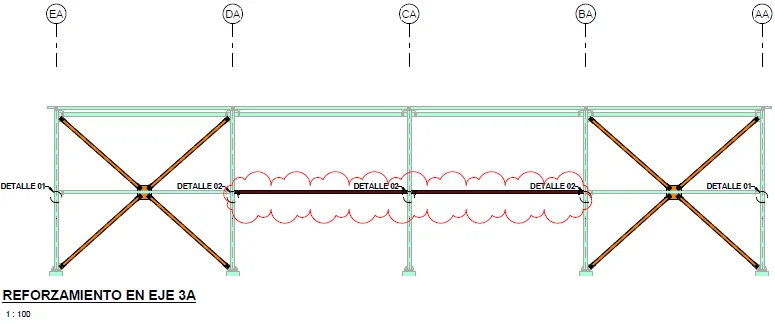

MEMORIA 29 · Evaluaciones especiales
Sustento técnico de solución para columna alabeada
Memoria técnica para sustento técnico de solución para columna alabeada (Activo 455). Organiza alabeo, deflexión, propuesta, anexos con enfoque de portafolio, conservando solo información técnica publicable.
Índice técnico organizado
Capítulos y subcapítulos principales
Estructura reconstruida desde los encabezados del Word. Las páginas iniciales se toman de saltos de página renderizados guardados por el documento; cuando un bloque inicia en el cuerpo principal se muestra como pág. 1.
Página 2
criterios generales
Generalidades y alcance
Resume el alcance técnico de la memoria y los antecedentes usados para plantear la verificación estructural.
Página 2
anexos
Conclusiones y anexos
Cierra la memoria con conclusiones, recomendaciones y anexos técnicos citados por el documento.
Galería técnica sanitizada
Modelos, resultados y verificaciones
Figuras extraídas del Word y filtradas para omitir logos, firmas, portadas y elementos administrativos. Se conserva contenido de modelación, cargas, resultados, conexiones y detalles de refuerzo.

